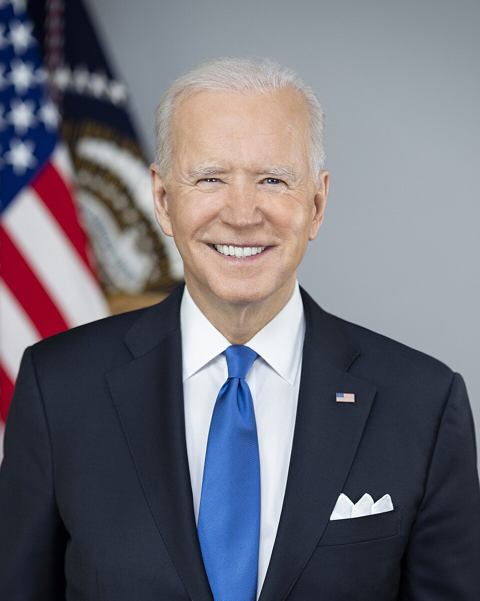

卷·16 · 对手们 · 第一手档案馆
卷·16 · 对手们 · 第一手档案馆
三次对决的名册
十七个初选对手，两位民主党总统候选人，一位临阵换将的副总统——三次大选的攻防双方原话并陈：他起的绰号与对手的回敬，各占一行。
本馆的对写规则：他的绰号与对手的回敬原话同台陈列，各自标注日期场合；选票数字沿用本刊已核底座（2016 年 304:227、2020 年 306:232、2024 年 312:226）。对决的详细经过在卷·04与卷·06，本馆只做人物名册与原话对位。
2016 年共和党初选共有 17 人参选（本刊终验轮已核此数）：唐纳德·特朗普、杰布·布什、本·卡森、克里斯·克里斯蒂、泰德·克鲁兹、卡莉·菲奥莉娜、吉姆·吉尔摩、林赛·格雷厄姆、迈克·哈克比、博比·金达尔、约翰·卡西奇、乔治·帕塔基、兰德·保罗、里克·佩里、马尔科·卢比奥、里克·桑托勒姆、斯科特·沃克——其中一位（卢比奥）十年后成了他的国务卿，政坛没有永远的对手。
退选的节奏本身就是一场淘汰赛：2015 年 9 月沃克与佩里率先离场；2016 年 2 月超级星期二前后，初选台上一度每天少一人；3 月 15 日卢比奥在主场佛罗里达败北退选；5 月 3 日印第安纳州初选夜，克鲁兹宣布停选、卡西奇次日跟进——马拉松在第四个月底结束，剩下的人拿走了整个党。双写：他的支持者说这是局外人碾碎了建制派的名单；建制派的说法是，那十六个月里党的灵魂被人劫持了。
他的武器：绰号"不诚实的希拉里"（Crooked Hillary）贯穿全年——绰号战的完整兵法见卷·08 番外展室。
她的回敬：2016 年 9 月 9 日，一场募款会上她说——
"To just be grossly generalistic, you can put half of Trump supporters into what I call 'the basket of deplorables.'" 希拉里原话，编辑部译：「说得粗略点，特朗普的支持者里有一半，可以放进我所说的'一篮子可悲之人'。」｜2016-09-09 · 纽约募款会——两天后她公开承认此说"过于一概而论"，但对方阵营连夜把它做成了自己人的徽章。
结局对写：选举人票 304:227；普选票她多出约 287 万张却输了选举——支持制度设计的人说这是宪法要的联邦制，批评制度的人说这是 2000 年以来第二次普选赢家落败。两种读法都写在卷·04。

他的武器：绰号"瞌睡乔"（Sleepy Joe）与"腐败乔"（Corrupt Joe）——两个外号在 2020 全年轮换使用，攻击点始终对准对方几十年华盛顿履历。
他的回敬：拜登把整场竞选钉在一个主题上——
"We're in a battle for the soul of the nation." 拜登原话，编辑部译：「我们正在进行一场为国家灵魂而战的战斗。」｜2020-08-21 民主党大会接受提名演说定调，10 月 6 日葛底斯堡演说重申——这场"灵魂之战"的框架贯穿了他整个竞选下半年。
结局对写：306:232，普选 8,128 万对 7,422 万——他成为败选的一方；这场败选的后续（拒绝认败、国会山、法庭）在卷·05完整陈列。
对手的换将：2024 年 7 月 21 日拜登宣布退选并背书副总统哈里斯——大选日之前只剩 107 天，美国现代史上最短的总统竞选之一（时间线见卷·06）。她由此成为美国主要政党总统候选人中首位黑人女性与南亚裔女性。
她的回敬：早在 2020 年的副总统辩论台上，她已经留下了那句话——
"Mr. Vice President, I'm speaking." 哈里斯原话，编辑部译：「副总统先生，我在发言。」｜2020-10-07 · 副总统辩论，打断彭斯的插话——这句话当晚成了她政治形象的第一枚图钉。
结局对写：312:226，横扫七个摇摆州，普选 49.8% 对 48.3%——特朗普成为自克利夫兰以来 128 年首位非连续两任的总统，她则成为 2016 年希拉里之后第二位输给他的女性候选人。双写：他称这是"史上最伟大的政治复出"；对手阵营说，这是他们两次都低估了的那个人。
细看三次对决的语言战：他给每个对手都起了外号，而对手们最狠的回敬往往是无心的——"一篮子可悲之人"被他做成了动员令，"我在发言"让对手阵营连夜做了 T 恤。语言战场的规律残酷而简单：谁先让对方的词变成自己的旗，谁就赢了下半场。
本馆收录 17+3 个对手名册（初选十七人与三位大选对手）、3 段对手原话，4 张肖像全部自由许可。名册不判胜负——选票已经判过了。
参见：19 法庭全记（起诉者与被诉者的另一张桌子）。
下期预告 · 第一手档案馆·卷·17《荧幕与梗》：SNL 十年模仿、摔角台剃头与《小鬼当家2》——被模仿的四十年。